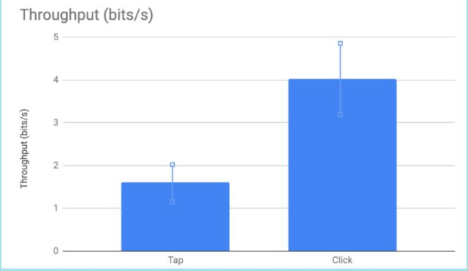

Authors: Justin Floyd, Ethan Parks, Walter Hoang
Summary: We tested the click condition first. Walter went first then Justin.
The average was 4.03 bits/second.
Then we tested the tap condition where Ethan went first then Walter.
The average was 1.62 bits/second.
We concluded that based off of throughput, clicking was better then tapping on a trackpad.
